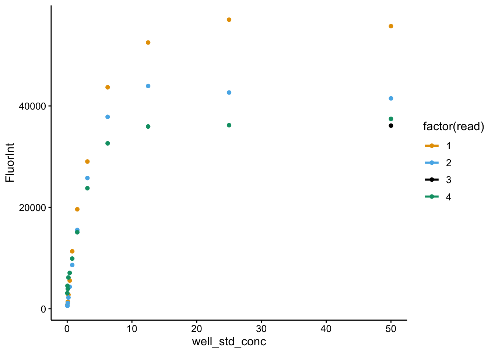
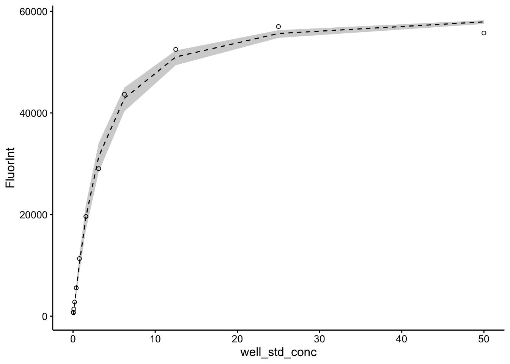
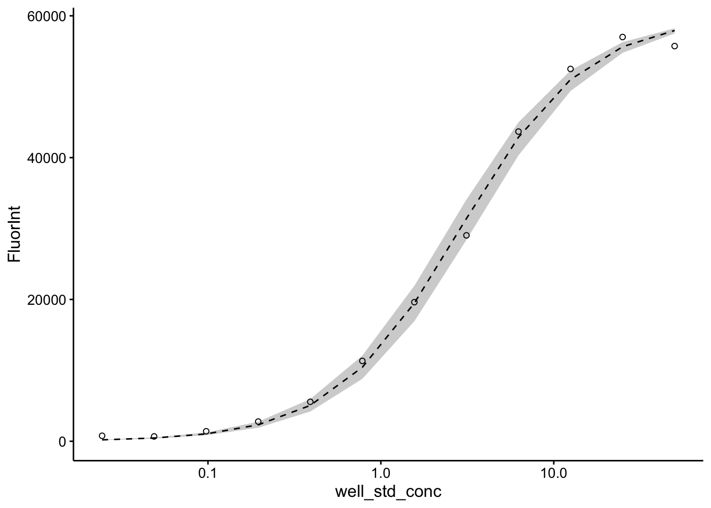
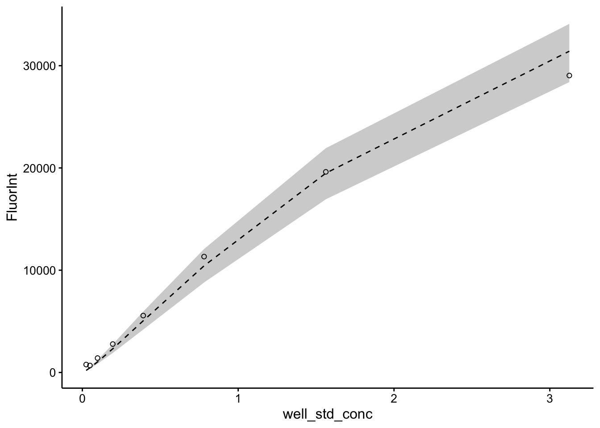
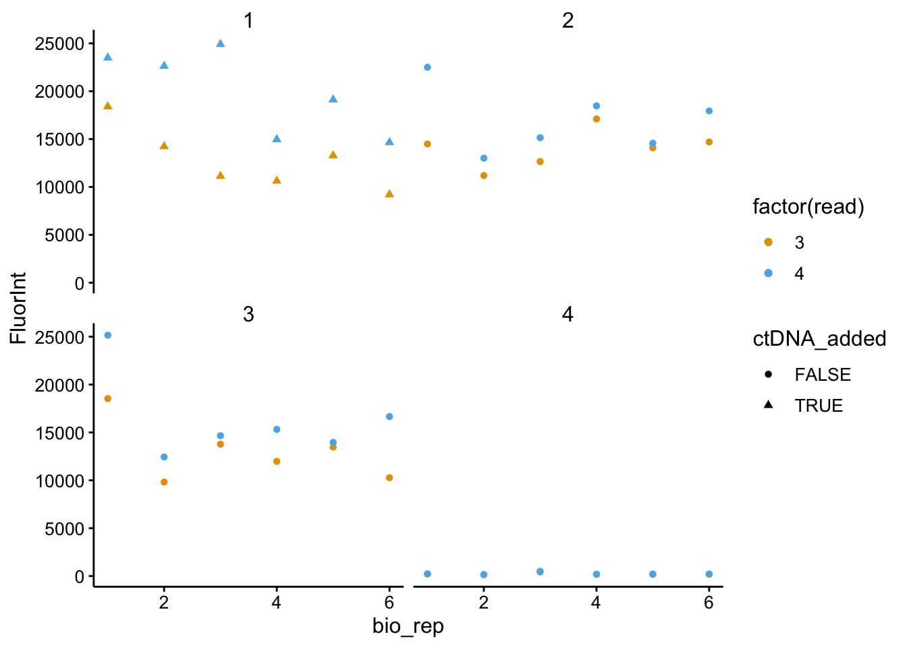
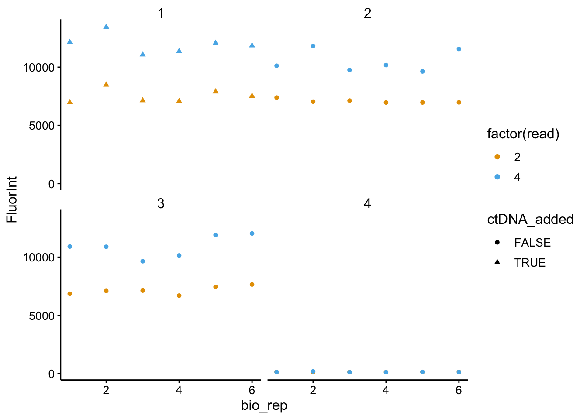
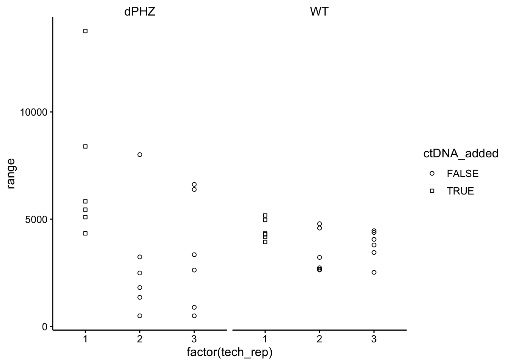
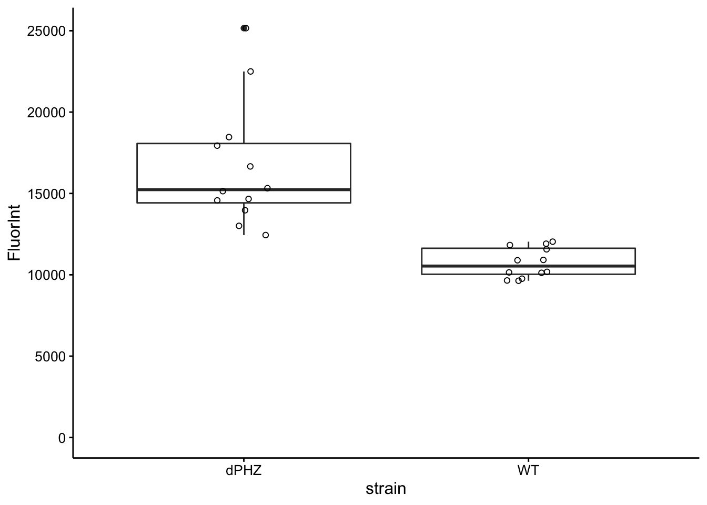

library(tidyverse)
library(cowplot)
library(viridis)
library(knitr)
library(kableExtra)
library(modelr)
library(broom)
knitr::opts_chunk$set(tidy.opts=list(width.cutoff=60),tidy=TRUE, echo = TRUE, message=FALSE, warning=FALSE, fig.align="center")
source("../../IDA/tools/plotting_tools.R")
theme_set(theme_1())Repeat measurement of eDNA in colonies, but compare WT and ∆phz.
Six ∆phz* and six WT colony biofilms were grown for four days, as usual. They were resuspended and measured for eDNA using the TOTO plate reader assay as described previously. The dPHZ colonies were a little harder to resuspend, so they received additional vortexing and pipetting.
Basically I acquired 4 plate reader measurements:
The standard curve was made by taking a stock of ctDNA (2mg/mL) and diluting 1:10. That was then used as the highest concentration and was diluted 2x consecutively to fill 12 wells.
The ctDNA added at the end was 2uL of a 1:25 dilution of the 2mg/mL ctDNA stock, because I estimated that should be in the right range to see approximately a doubling of fluorescence.
df_meta <- read_csv("data/2019_11_22_well_metadata.csv")
df_std <- read_csv("data/2019_11_22_std_preCTdna.csv") %>% gather(key = "Well",
value = "FluorInt", -wavelength) %>% mutate(read = 1)
df_wt <- read_csv("data/2019_11_22_std_WT_preCTdna.csv") %>%
gather(key = "Well", value = "FluorInt", -wavelength) %>%
mutate(read = 2)
df_dphz <- read_csv("data/2019_11_22_dphz_preCTdna.csv") %>%
gather(key = "Well", value = "FluorInt", -wavelength) %>%
mutate(read = 3)
df_ctDNA <- read_csv("data/2019_11_22_std_wt_dphz_postCTdna.csv") %>%
gather(key = "Well", value = "FluorInt", -wavelength) %>%
mutate(read = 4)
df_all <- bind_rows(df_std, df_wt, df_dphz, df_ctDNA)
df_all_meta <- left_join(df_all, df_meta, by = c(Well = "well"))ggplot(df_all_meta %>% filter(strain == "std" & wavelength ==
535), aes(x = well_std_conc, y = FluorInt, color = factor(read))) +
geom_point() + geom_smooth(method = "nls", formula = y ~
max * (x^hill)/((Kd^hill) + (x^hill)), method.args = list(start = c(max = 60000,
hill = 1, Kd = 5)), se = F)
## # A tibble: 12 x 10
## wavelength Well FluorInt read strain toto_added ctDNA_added
## <dbl> <chr> <dbl> <dbl> <chr> <lgl> <lgl>
## 1 535 A1 55732 1 std TRUE TRUE
## 2 535 A2 57010 1 std TRUE TRUE
## 3 535 A3 52506 1 std TRUE TRUE
## 4 535 A4 43673 1 std TRUE TRUE
## 5 535 A5 29038 1 std TRUE TRUE
## 6 535 A6 19617 1 std TRUE TRUE
## 7 535 A7 11332 1 std TRUE TRUE
## 8 535 A8 5564 1 std TRUE TRUE
## 9 535 A9 2778 1 std TRUE TRUE
## 10 535 A10 1406 1 std TRUE TRUE
## 11 535 A11 682 1 std TRUE TRUE
## 12 535 A12 774 1 std TRUE TRUE
## # … with 3 more variables: well_std_conc <dbl>, bio_rep <dbl>,
## # tech_rep <dbl>model_toto <- nls(data = df_all_meta %>% filter(strain == "std" &
wavelength == 535 & read == 1), formula = FluorInt ~ max *
(well_std_conc^hill)/((Kd^hill) + (well_std_conc^hill)),
start = c(max = 60000, hill = 1, Kd = 5))
tidy(model_toto, conf.int = T)## # A tibble: 3 x 7
## term estimate std.error statistic p.value conf.low conf.high
## <chr> <dbl> <dbl> <dbl> <dbl> <dbl> <dbl>
## 1 max 59842. 1473. 40.6 1.65e-11 56876. 63348.
## 2 hill 1.19 0.0780 15.3 9.49e- 8 1.03 1.38
## 3 Kd 2.87 0.211 13.6 2.60e- 7 2.47 3.40confint_toto <- tidy(model_toto, conf.int = T) %>% filter(term ==
"Kd")
pred_toto <- df_all_meta %>% filter(strain == "std" & wavelength ==
535 & read == 1) %>% mutate(max = coef(model_toto)[1], hill = coef(model_toto)[2],
kd = coef(model_toto)[3]) %>% mutate(kd_low = confint_toto$conf.low,
kd_high = confint_toto$conf.high) %>% mutate(pred = max *
(well_std_conc^hill)/((kd^hill) + (well_std_conc^hill))) %>%
mutate(pred_low = max * (well_std_conc^hill)/((kd_low^hill) +
(well_std_conc^hill))) %>% mutate(pred_high = max * (well_std_conc^hill)/((kd_high^hill) +
(well_std_conc^hill)))
ggplot(pred_toto, aes(x = well_std_conc, y = FluorInt)) + geom_ribbon(aes(ymin = pred_low,
ymax = pred_high), fill = "light gray") + geom_line(aes(y = pred),
linetype = 2) + geom_point(shape = 21)
ggplot(pred_toto, aes(x = well_std_conc, y = FluorInt)) + geom_ribbon(aes(ymin = pred_low,
ymax = pred_high), fill = "light gray") + geom_line(aes(y = pred),
linetype = 2) + geom_point(shape = 21) + scale_x_log10()
ggplot(pred_toto %>% filter(FluorInt < 30000), aes(x = well_std_conc,
y = FluorInt)) + geom_ribbon(aes(ymin = pred_low, ymax = pred_high),
fill = "light gray") + geom_line(aes(y = pred), linetype = 2) +
geom_point(shape = 21)
ggplot(df_all_meta %>% filter(strain == "dPHZ" & wavelength ==
535), aes(x = bio_rep, y = FluorInt, color = factor(read),
shape = ctDNA_added)) + geom_point() + facet_wrap(~tech_rep)
ggplot(df_all_meta %>% filter(strain == "WT" & wavelength ==
535), aes(x = bio_rep, y = FluorInt, color = factor(read),
shape = ctDNA_added)) + geom_point() + facet_wrap(~tech_rep)
df_ctDNA_change <- df_all_meta %>% filter(wavelength == 535) %>%
group_by(strain, tech_rep, bio_rep, ctDNA_added) %>% summarise(min = min(FluorInt),
max = max(FluorInt)) %>% mutate(range = max - min)
ggplot(df_ctDNA_change %>% filter(strain != "std" & tech_rep <
4), aes(x = factor(tech_rep), y = range, shape = ctDNA_added)) +
geom_point() + facet_wrap(~strain) + scale_shape_manual(values = c(21,
22))
Interestingly, the initial reading for WT was taken more quickly following incubation with the dye than ∆phz, because I had to restart the ∆phz scan because it was taking too long to re-read the WT samples. Perhaps that is the reason all the WT samples increased greatly between the first and last reads.
I think the safest thing to do (in order to compare WT and ∆phz) would be to take the final reading and ignore the technical replicate that had DNA added.
That still gives us 6 biological replicates and 2 tech. reps to work with.
ggplot(df_all_meta %>% filter(strain %in% c("WT", "dPHZ") & wavelength ==
535 & read == 4 & ctDNA_added == FALSE & toto_added == T),
aes(x = strain, y = FluorInt)) + geom_boxplot() + geom_jitter(shape = 21,
height = 0, width = 0.1) + ylim(0, NA)
However, adding ctDNA to WT samples did not increase the signal, whereas for ∆phz* samples it did. This suggests that there may be a further complication where the WT biofilms either inhibit the binding of the dye, or degrade the free ctDNA…
## R version 3.5.2 (2018-12-20)
## Platform: x86_64-apple-darwin15.6.0 (64-bit)
## Running under: macOS Mojave 10.14.6
##
## Matrix products: default
## BLAS: /Library/Frameworks/R.framework/Versions/3.5/Resources/lib/libRblas.0.dylib
## LAPACK: /Library/Frameworks/R.framework/Versions/3.5/Resources/lib/libRlapack.dylib
##
## locale:
## [1] en_US.UTF-8/en_US.UTF-8/en_US.UTF-8/C/en_US.UTF-8/en_US.UTF-8
##
## attached base packages:
## [1] stats graphics grDevices utils datasets methods base
##
## other attached packages:
## [1] broom_0.5.1 modelr_0.1.2 kableExtra_1.0.1
## [4] knitr_1.23 viridis_0.5.1 viridisLite_0.3.0
## [7] cowplot_0.9.4 forcats_0.3.0 stringr_1.3.1
## [10] dplyr_0.8.1 purrr_0.2.5 readr_1.3.1
## [13] tidyr_0.8.2 tibble_2.1.3 ggplot2_3.2.0
## [16] tidyverse_1.2.1
##
## loaded via a namespace (and not attached):
## [1] tidyselect_0.2.5 xfun_0.7 haven_2.0.0 lattice_0.20-38
## [5] colorspace_1.4-0 generics_0.0.2 htmltools_0.3.6 yaml_2.2.0
## [9] utf8_1.1.4 rlang_0.4.0 pillar_1.3.1 glue_1.3.1
## [13] withr_2.1.2 readxl_1.2.0 munsell_0.5.0 gtable_0.2.0
## [17] cellranger_1.1.0 rvest_0.3.2 evaluate_0.14 labeling_0.3
## [21] fansi_0.4.0 Rcpp_1.0.1 scales_1.0.0 backports_1.1.3
## [25] formatR_1.5 webshot_0.5.1 jsonlite_1.6 gridExtra_2.3
## [29] hms_0.4.2 digest_0.6.18 stringi_1.2.4 grid_3.5.2
## [33] cli_1.1.0 tools_3.5.2 magrittr_1.5 lazyeval_0.2.1
## [37] crayon_1.3.4 pkgconfig_2.0.2 MASS_7.3-51.1 xml2_1.2.0
## [41] lubridate_1.7.4 assertthat_0.2.1 rmarkdown_1.13 httr_1.4.0
## [45] rstudioapi_0.9.0 R6_2.4.0 nlme_3.1-140 compiler_3.5.2